Product preview
Specifications
Finish
No video file found.
Add your screen recording to
assets/video/[product-id].mp4
then refresh the page.
I built this 3D web application as my assignment for the Web3D Applications module at the University of Sussex. The project began in January when I set up my development environment in Lab 1 using Visual Studio Code and the Live Server extension, and learned the basics of structuring a web page with HTML, CSS, and Bootstrap. From there I progressively developed the project across eleven labs - moving through 3D modelling in Blender, integrating models into a Three.js web page, adding interactivity with JavaScript, and finally refining and testing the finished application in April.
Rather than following the Coca-Cola brand from the labs, I chose to design an original tech store concept with four products I modelled entirely myself in Blender: a laptop, a vertical-fold phone, an earbuds case, and a horizontal-fold phone.
I created all four models from scratch in Blender, starting from the skills introduced in Lab 3 in February, which covered mesh modelling, applying materials, and animation. The screenshots below show the models inside the Blender viewport at various stages of development. Click any image to view it full size.
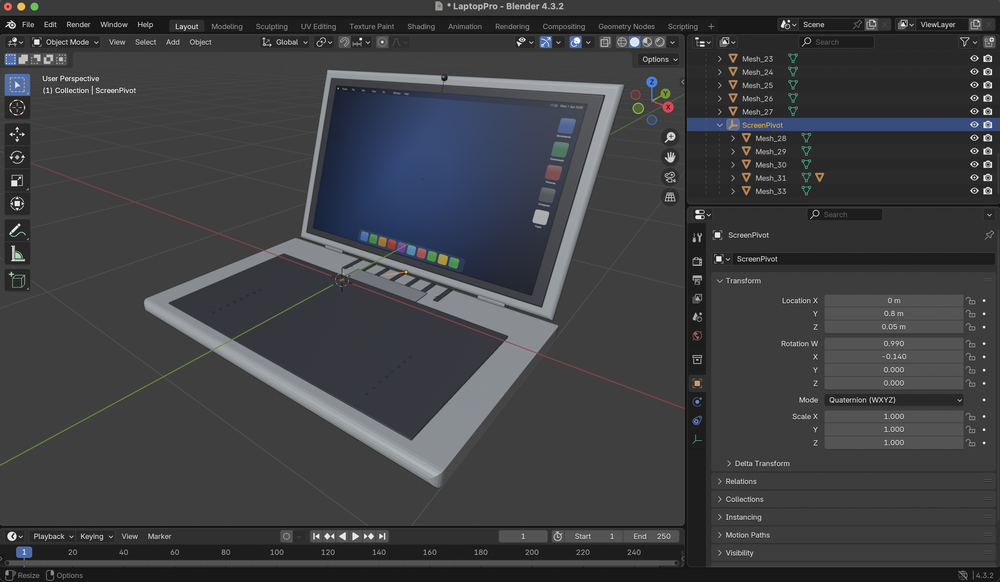
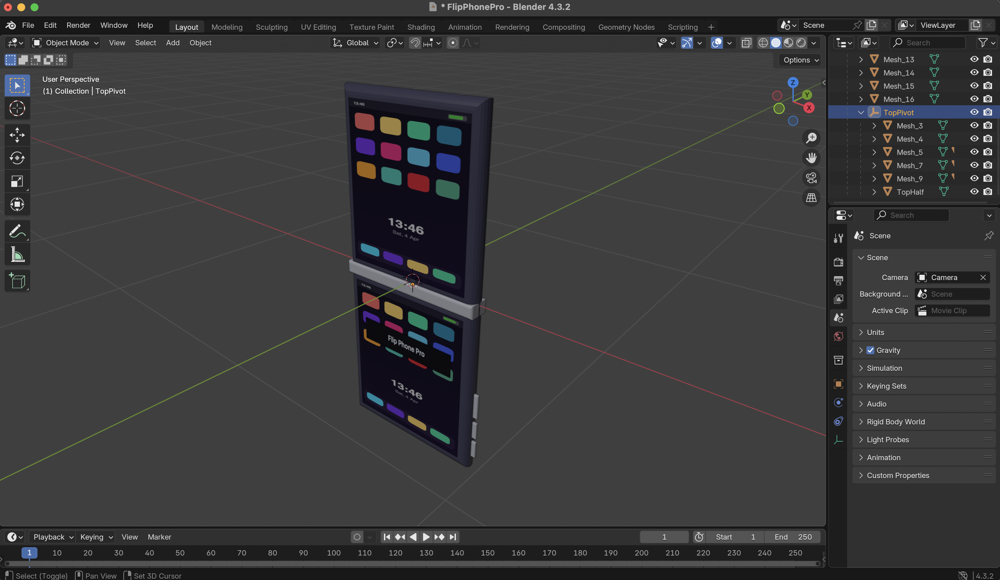
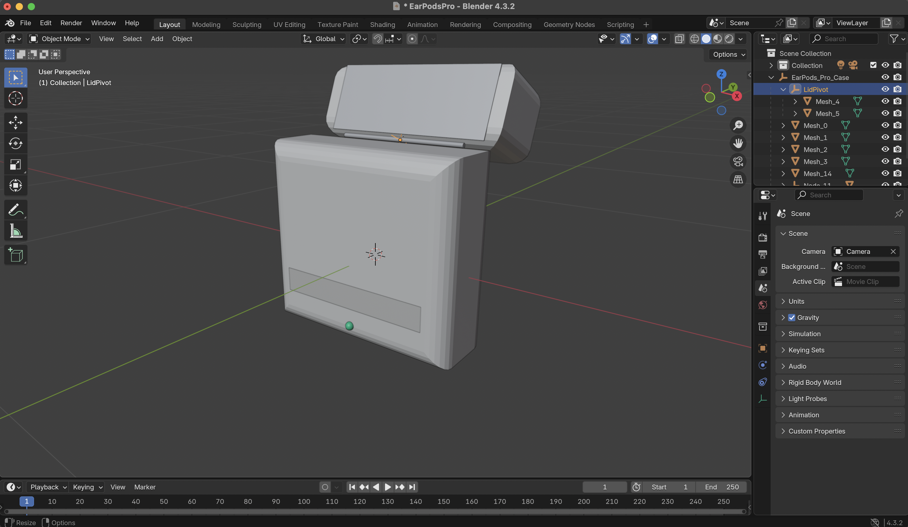
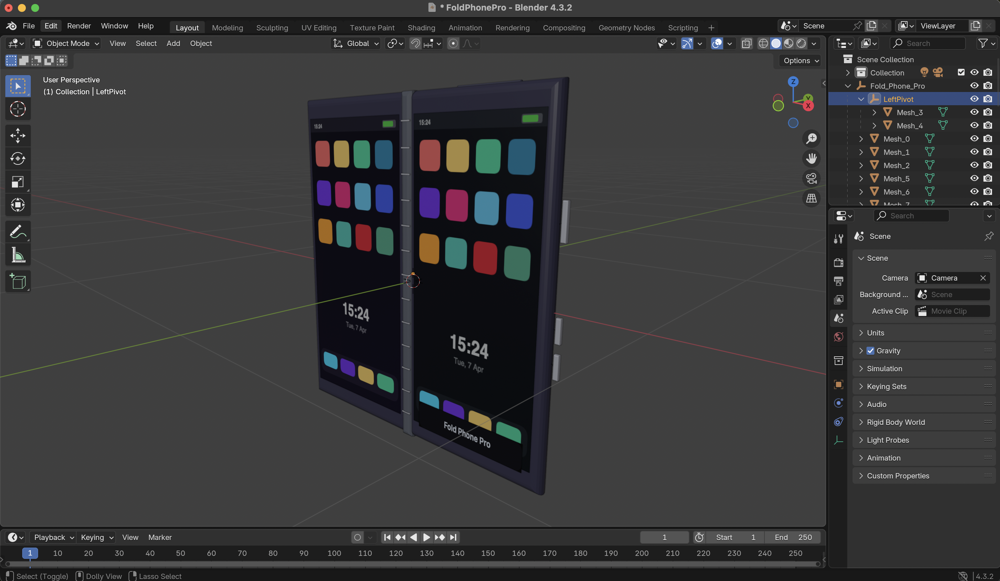
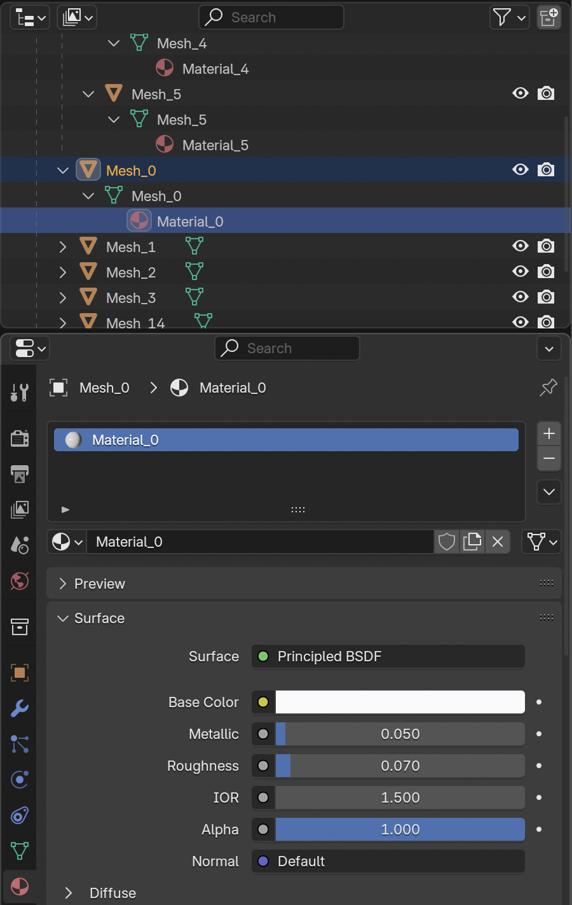
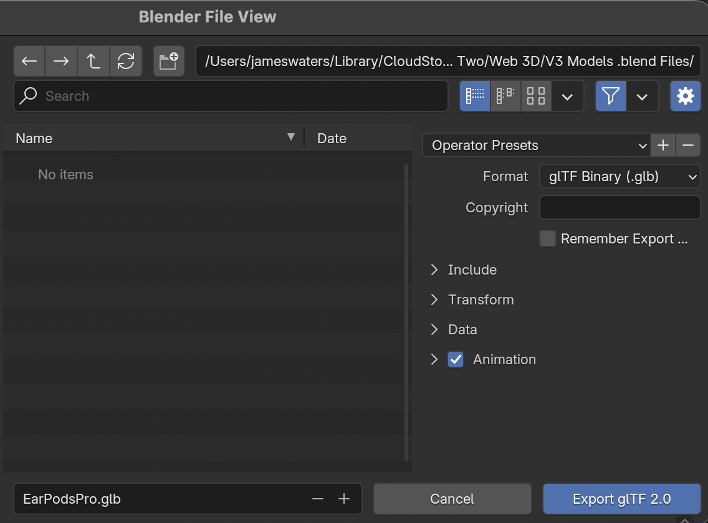
Each model has three colour finishes you can explore. Select a model from the sidebar, then use the colour swatches in the panel on the right side of the 3D viewport to switch finishes in real time.
In Lab 11 in April I carried out structured testing of my web application using both Chrome and Safari, using the testing methodologies covered in the lab. The screenshots below show evidence of the site running and features working correctly. Click any image to view full size.
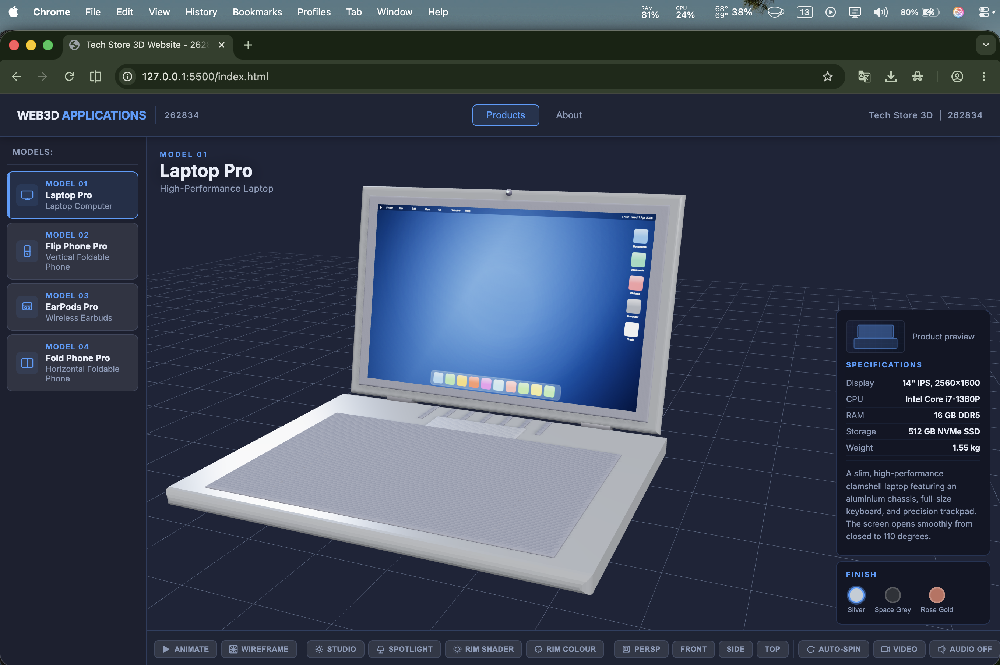
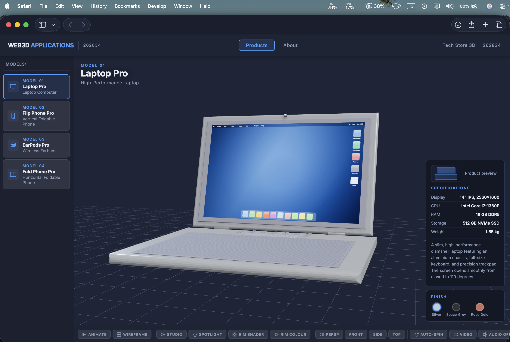
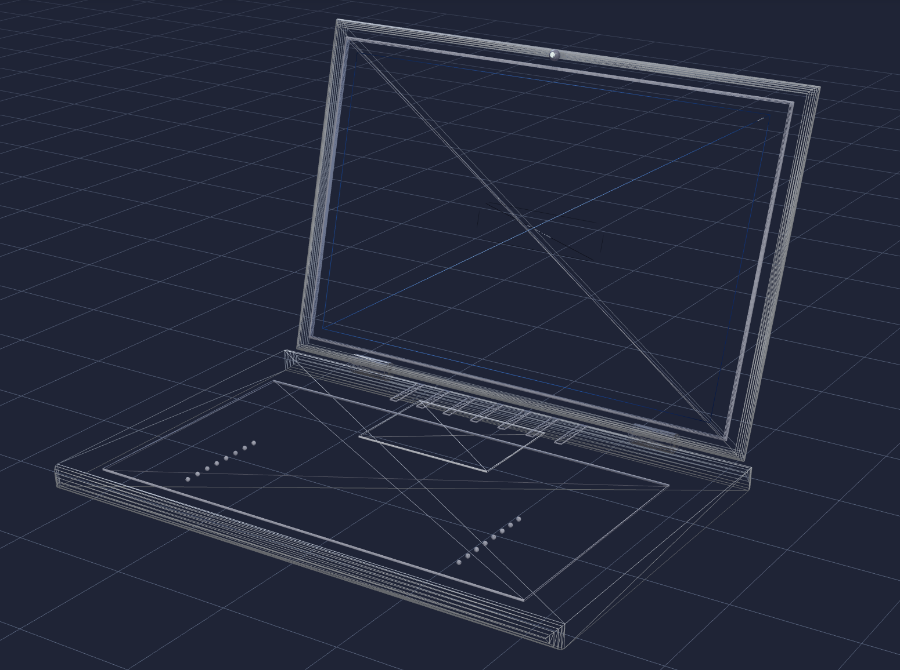
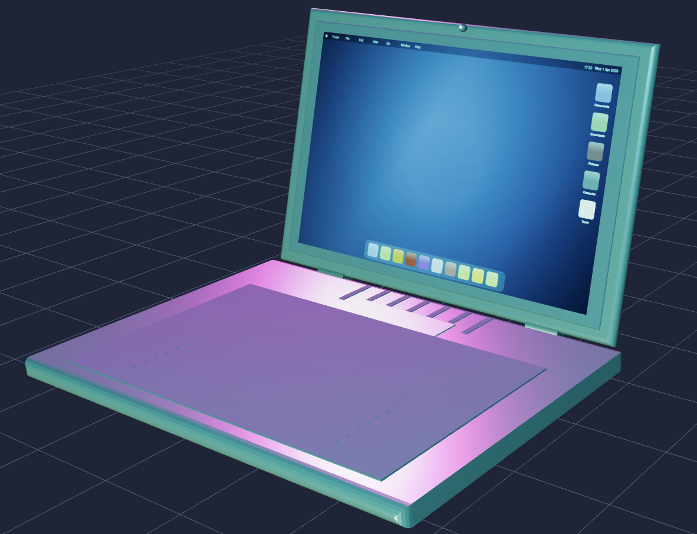
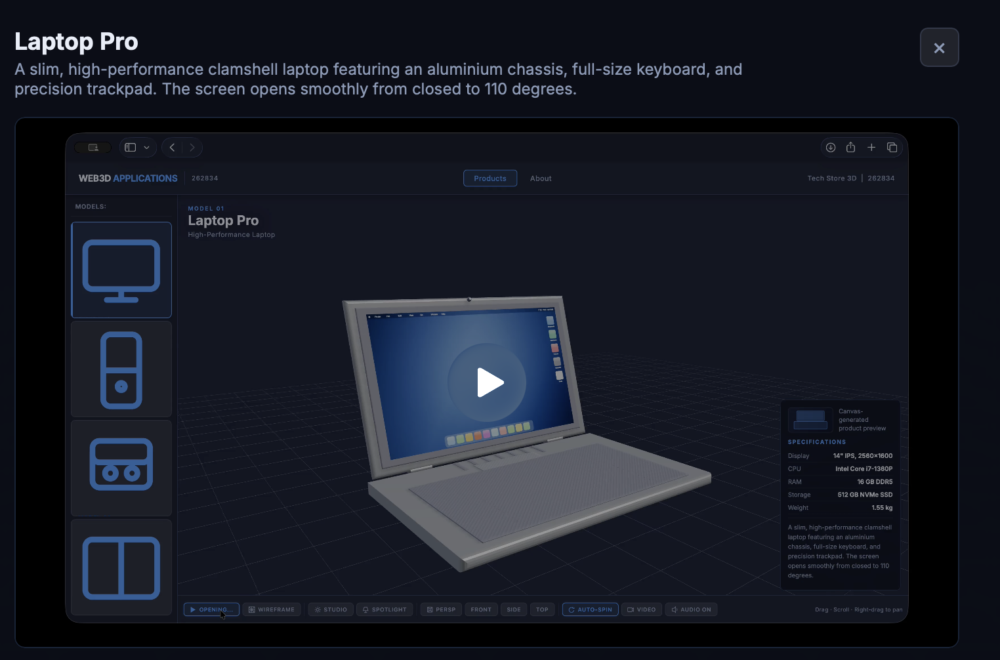
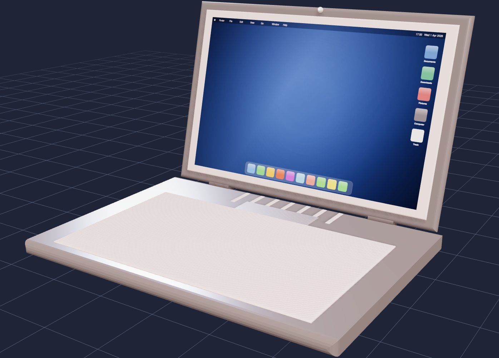
I followed the black-box testing methodology from Lab 11, testing each interactive feature independently in both Chrome and Safari to confirm it worked as expected. Any issues found during testing were fixed before final submission.
| Feature Tested | Chrome 124 (Mac) | Safari 17 (Mac) | Notes |
|---|---|---|---|
| All 4 GLB models load from server | Pass | Pass | Loading spinner shown while each model fetches; once loaded the model is cached so it does not download again |
| Animate open/close button | Pass | Pass | Delta-time tween smooth on all 4 models; animation sound plays |
| Wireframe toggle | Pass | Pass | Traverses all GLTF meshes correctly |
| Lighting presets (Studio/Neon/Daylight) | Pass | Pass | All three switch correctly; no light bleed between presets |
| Spotlight toggle | Pass | Pass | Independent of lighting presets; gold button indicator |
| Camera presets (4 views) | Pass | Pass | Animated ease-out transition to Persp/Front/Side/Top |
| Colour swatches (3 per model) | Pass | Pass | Material lerp applied; emissive screen surfaces correctly skipped |
| Auto-spin | Pass | Pass | OrbitControls autoRotate; disabled when camera preset is clicked |
| GLSL rim shader toggle | Pass | Pass | ShaderMaterial visible/hidden; BackSide additive blend correct |
| GLSL rim colour cycle | Pass | Pass | uRimColor uniform updates live on GPU without recompile |
| Web Audio (ambient drone + whoosh) | Pass | Pass | Requires user gesture to start; no audio files used |
| Video panel per product | Pass | Pass | Correct video loads per product; graceful fallback if MP4 absent |
| Canvas product thumbnails | Pass | Pass | toDataURL() rendered as img src; unique silhouette per product |
| JSON fetch (data/products.json) | Pass | Pass | Loaded before app init; window.PRODUCTS populated from response |
| Content swapping on product select | Pass | Pass | Model, specs, thumbnail, description, swatches all update on click |
| About page - no header overlap | Pass | Pass | Grid layout correct; evidence galleries display correctly |
| OrbitControls (drag/zoom/pan) | Pass | Pass | Damping and distance limits working |
| Keyboard navigation (tab/enter) | Pass | Pass | All buttons tab-focusable and Enter/Space operable |
| ITS web server deployment | Pass | Pass | Live at users.sussex.ac.uk/~jw909/Web3D-V7/ |